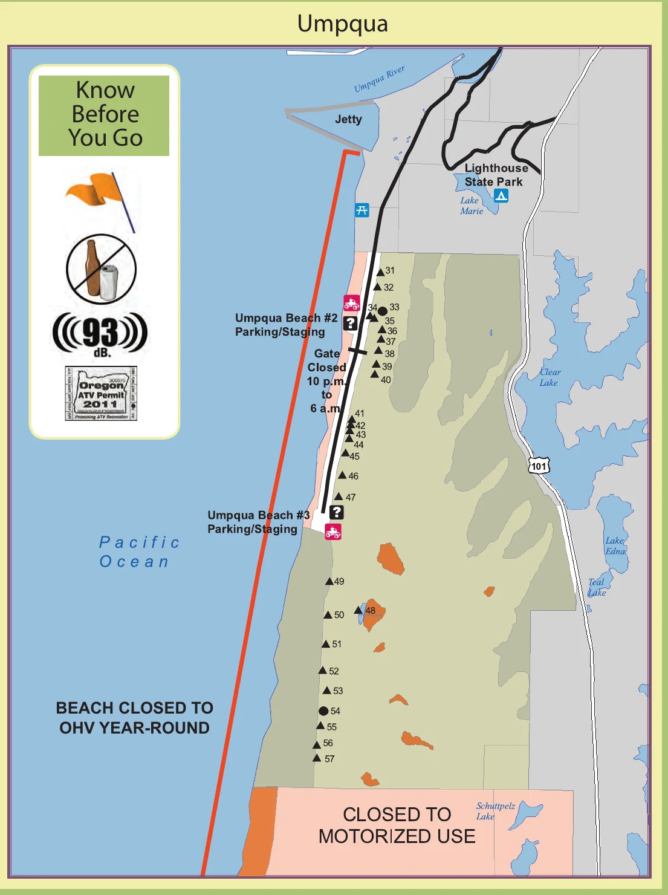

Broad exposed sand, shifting ridges, and fewer visual landmarks than the other zones.
WINCHESTER BAY RIDING AREA
Umpqua
Dunes.
A focused big-sand guide with the official riding-area map, two staging entrances, sand-camp orientation, nearby services, and GPS directions.
A compact harbor base with direct access to the dramatic central dune field.
Two paved parking and staging choices reach the same open riding area from different points.
OFFICIAL RIDING-AREA MAP
Two staging points.
One big dune field.
This Forest Service map makes the central zone easy to understand. Use it for orientation, then carry the current MVUM for legal routes and live GPS position.

HOW THIS ZONE WORKS
Simple access does not mean simple terrain.
Open-sand orientation
The Umpqua zone has fewer named trail corridors. Mark the staging entrance, watch the river and highway edges, and save regroup points.
Sand-camp corridor
Numbered sand camps run through the open riding area. They are useful landmarks but remain active campsites, not play areas.
Wind changes the map
Large ridges and slip faces can change quickly. A route that felt obvious on arrival may look different after wind, fog, or fading light.
Know the closed edges
The map shows water, state-park, highway, and non-motorized boundaries. Do not treat untracked sand as automatically open.
STAYING NEAR UMPQUA DUNES
Choose harbor comfort or sand-camp access.
Umpqua sand camps
Numbered sites sit inside the riding area. Confirm reservations, soft-sand access requirements, group size, and current fire rules.
Check reservations ↗Umpqua Lighthouse State Park
A developed state-park option near Lake Marie. It is a lodging base, not direct permission to ride from the campsite.
Open GPS ↗Winchester Bay harbor
Private RV, marina, and town lodging options put meals and services close by. Confirm trailer parking before booking.
See nearby-town guidance →TAKE IT OFFLINE
Download the GPS map before entering the dunes.
Install Avenza Maps and download the free current Siuslaw Map 3. Your phone can display its GPS position on the map without cellular service.
- 1Install Avenza Maps on the phone you will carry.
- 2Download the free Siuslaw Map 3 while connected to Wi-Fi.
- 3Mark your staging entrance and confirm GPS before riding away.
BEFORE THE ENGINES START